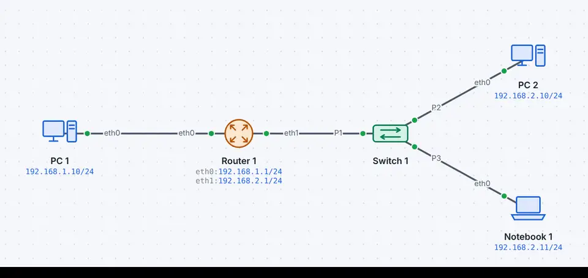
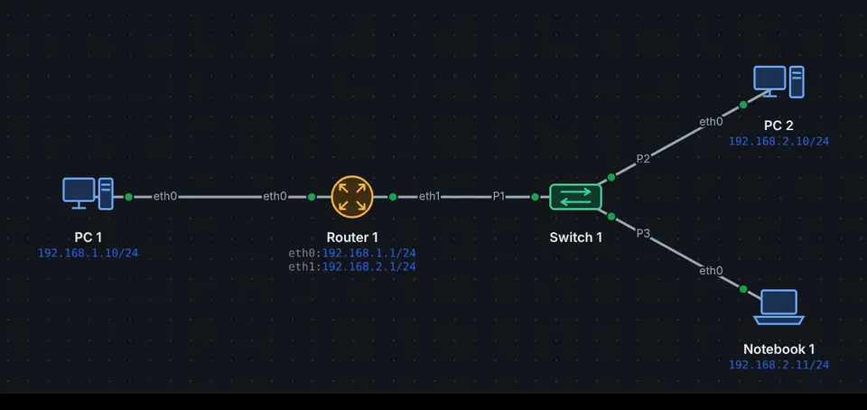

Eine IPv4-Adresse hat 32 Bit, geschrieben als vier Zahlen von 0 bis 255: 192.168.1.10. Zusammen mit der Maske (255.255.255.0 oder /24) sagt sie, in welchem Netz ein Gerät liegt (Subnetting und VLSM).
Bereich
Zweck
10.0.0.0/8, 172.16.0.0/12, 192.168.0.0/16
privat, nur im eigenen Netz (RFC 1918)
100.64.0.0/10
Provider-NAT (CGNAT)
127.0.0.0/8
das Gerät selbst (Loopback)
169.254.0.0/16
selbst vergeben, wenn DHCP fehlt
192.0.2.0/24, 198.51.100.0/24, 203.0.113.0/24
für Beispiele und Dokumentation (RFC 5737)
Der IPv4-Kopf
Ohne Optionen ist der Kopf 20 Byte lang, fünf Zeilen zu 32 Bit. Die Werte stammen aus einem echten Paket der Simulation.
IPv4Paket · RFC 791, RFC 2474, RFC 3168
0481216202428
Version4 Bit4
IHL4 Bit5
DSCP6 Bit0
ECN2 Bit0
Gesamtlänge16 Bit140
Identifikation16 Bit0x0006
Flags3 BitDF
Fragment-Offset13 Bit0
TTL8 Bit64
Protokoll8 Bit6
Kopf-Prüfsumme16 Bit0x9aa7
Quell-IP32 Bit192.168.10.100
Ziel-IP32 Bit192.168.20.10
Optionen0–40 Byte
Nutzdaten≤ 65515 Byte120 Byte
Jede Zeile hat 32 Bit (4 Byte), Bit 0 links, so zeichnen die RFCs ihre Köpfe. Gestrichelt: variabel oder optional. Zeigen auf ein Feld erklärt es.
Feld
Länge
Wert im Beispiel
Bedeutung
Version
4 Bit
4
4 für IPv4.
IHL
4 Bit
5
Internet Header Length in 32-Bit-Wörtern: 5 = 20 Byte ohne Optionen.
DSCP
6 Bit
0
Differentiated Services: Verkehrsklasse für Quality of Service (RFC 2474), 0 = Best Effort.
ECN
2 Bit
0
Explicit Congestion Notification: Router melden Stau, ohne Pakete zu verwerfen (RFC 3168).
Gesamtlänge
16 Bit (2 Byte)
140
Länge von Kopf und Nutzdaten in Byte, höchstens 65 535.
Identifikation
16 Bit (2 Byte)
0x0006
Nummer des Pakets; alle Fragmente eines Pakets tragen dieselbe.
Flags
3 Bit
DF
Bit 0 reserviert, DF = nicht fragmentieren, MF = weitere Fragmente folgen.
Fragment-Offset
13 Bit
0
Lage des Fragments im ursprünglichen Paket, in Schritten von 8 Byte.
TTL
8 Bit
64
Time to Live: Jeder Router zieht 1 ab; bei 0 wird das Paket verworfen (ICMP Time Exceeded).
Prüfsumme nur über den Kopf (RFC 1071); jeder Router rechnet sie wegen der TTL neu.
Quell-IP
32 Bit (4 Byte)
192.168.10.100
Absender, bleibt auf dem ganzen Weg gleich (ausser bei NAT).
Ziel-IP
32 Bit (4 Byte)
192.168.20.10
Ziel, danach entscheiden die Router den Weg.
Optionen (optional)
0–40 Byte
Selten genutzt (z.B. Record Route); dann ist IHL grösser als 5.
Nutzdaten
≤ 65515 Byte
120 Byte
Das Segment oder die Nachricht der nächsten Schicht (TCP, UDP, ICMP …).
Werte: Echter Rahmen aus der Demo «DNS, TCP und HTTP» (Nr. 36, 158 Byte), so zeigt ihn auch die Paketliste in leyoNET.
Auf dem Weg durch mehrere Netze wechselt der Ethernet-Kopf an jedem Router, der IP-Kopf bleibt; nur TTL und Prüfsumme ändern sich.
Typische Fehler
Falsche Maske: Zwei Geräte meinen, im selben Netz zu sein, sind es aber nicht (oder umgekehrt).
Gateway ausserhalb des Netzes: leyoNET erlaubt die Eingabe, warnt aber; so lassen sich Fehlersuche-Aufgaben bauen.
Doppelte Adresse: Zwei Geräte mit derselben Adresse im selben Netz; leyoNET markiert beide mit einem roten Ausrufezeichen.
So geht es in leyoNET
Derselbe Text wie in der Hilfe der App (Taste F1).
IP-Adressen
Jedes Gerät im Netz braucht eine IP-Adresse und eine Maske (z.B. 192.168.1.10/24). Die Maske sagt, welcher Teil das Netz ist. Liegt das Ziel in einem anderen Netz, schickt das Gerät das Paket an sein Gateway (den Router). Der DNS-Server übersetzt Namen in Adressen.
Gespeichert wird, sobald du das Feld verlässt (Tab, Enter oder Klick daneben, auch auf ein anderes Gerät). Fehlt die Maske, setzt leyoNET die übliche Maske der Adressklasse ein (z.B. /24 für 192.168.x.x); sie lässt sich jederzeit ändern.
Doppelte Adressen
Haben zwei Geräte im selben Netz dieselbe IP-Adresse, erscheint am Gerät ein rotes !, die Adresse ist rot, und das Formular zeigt eine Warnung. In der Simulation zählen auch per DHCP bezogene Adressen.
Im selben Netz heisst: verbunden über Kabel, Switches, Access Points oder Modems, ohne Router dazwischen. Hinter verschiedenen Routern (z.B. zwei Heimnetze mit 192.168.1.1) ist dieselbe private Adresse erlaubt.
Beispiel ansehen


Zeitlupe So sieht es in der Simulation aus: Jeder Punkt ist ein Rahmen auf dem Kabel.Standardgateway
Zwei Subnetze, verbunden über einen Router.
PC 1 erkennt, dass das Ziel in einem anderen Netz liegt, und schickt das Paket an seinen Router. Die TTL sinkt um eins.
«Live ansehen» öffnet das Netz in leyoNET, die Simulation läuft in einer Schleife. In der App findest du es unter Datei → Demo-Netze, mit Führung Schritt für Schritt.
Üben
★★☆☆☆Zwei Netze mit einem Router· 4 Ziele · Arbeitsblatt
★☆☆☆☆Wer hat die Adresse doppelt?· 3 Ziele · Arbeitsblatt
★☆☆☆☆UE03 Router01 – Auftrag 1: Ein Netz mit zwei Switches· 6 Ziele · Arbeitsblatt
★☆☆☆☆UE03 Router01 – Auftrag 2: Zwei Netze an denselben Switches· 6 Ziele · Arbeitsblatt
In leyoNET unter Werkzeuge → Aufgaben-Katalog. Jede Übung prüft sich selbst.
Was leyoNET vereinfacht
Protokoll
Schicht
Vereinfachung in der Simulation
IPv4
3
Keine Fragmentierung (MSS 1460 verhindert sie), keine Optionen
RFC 1918 – Address Allocation for Private Internets
RFC 5737 – IPv4 Address Blocks Reserved for Documentation
Weiterlesen
Subnetting und VLSMEin Netz in kleinere aufteilen, Masken und Präfixe lesen, Hostbereich und Broadcast berechnen – gleichmässig oder nach Bedarf.
Wie Routing funktioniertStandardgateway, Routing-Tabelle, längstes Präfix und administrative Distanz – und wann man statisch, automatisch oder dynamisch routet.
ARPWie ein Gerät zur IP-Adresse im eigenen Netz die MAC-Adresse findet – mit Broadcast-Anfrage, Antwort und Cache.
ICMP, Ping und TracerouteEcho Request und Reply, «Ziel nicht erreichbar» und «TTL abgelaufen»: wie Ping und Traceroute funktionieren.